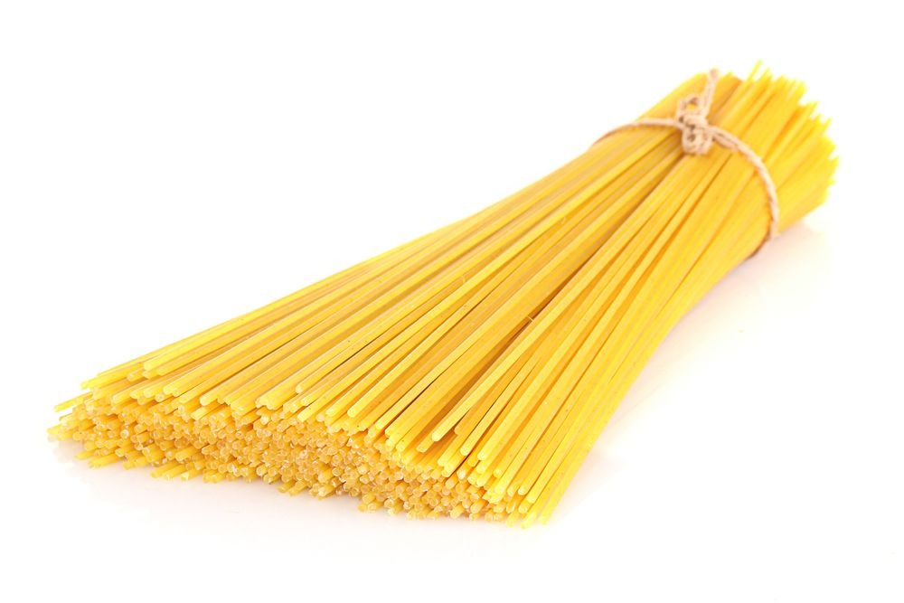
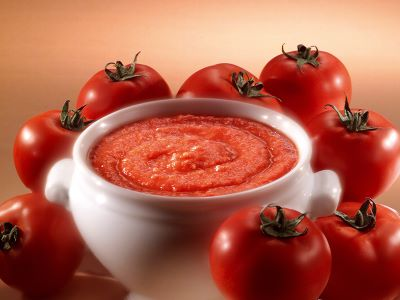
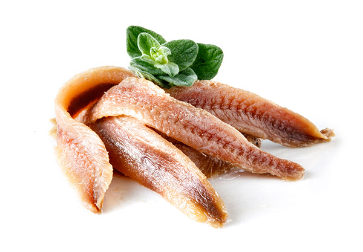
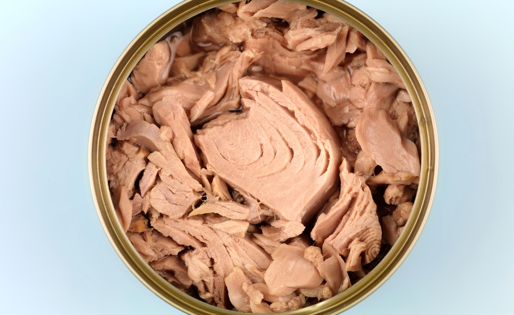
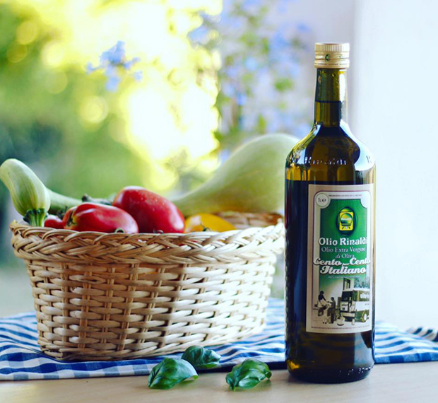

| Spaghetti 320g |  |
| Pomodori pelati 400g |  |
| Sale fino q.b. | Immagine sale fino |
| Basilico q.b. | Immagine Basilico |
| Acciughe q.b. |  |
| Tonno sott'olio (scolato) 150g |  |
| Olio extra vergine d'oliva |  |
| Pepe nero | Immagine olio |
| Aglio (come se non ci fosse un domani) | Immagine olio |
Pasta. Va bene qualuque tipo di pasta (io preferisco gli spaghetti) l'importante e cucinarla al " DENTE "
Passata di pomodoro DEVE essere SAN MARZANO DOP
Tonno. Rigorosamente in lattina che garantisce il 10% di gusto in più
Olio extra vergine d'oliva. Rigorosamente pugliese
==> aggiughe (opzionale) solo per esperti